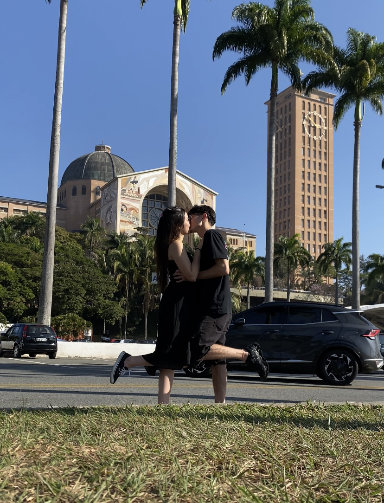

Só um pouco do que eu sinto.
Bom vamos lá, primeiro de tudo eu queria que você soubesse o
quão feliz eu sou por te ter em minha vida, você com certeza
foi a melhor escolha que eu fiz na minha vida inteira, sei que não fiz
escolhas tão boas assim ao longo da minha vida, mas te garanto
que você foi a melhor delas.
Meu amor, como descrever em palavras o que eu sinto por você ???
será que uma simples frase de amor seria o suficiente ???
Bom, isso eu não vou conseguir te responder, massss eu sei que
o que eu sinto por você é tão forte que eu faria e daria qualquer
coisa por você, daria qualquer coisa por um simples sorriso seu,
só pra te ver feliz.
Como eu já te disse outras vezes e volto a repetir,o Luan não seria
o Luan se não fosse a Nicole, eu não seria essa pessoa que eu me tornei
hoje sem você ao meu lado, sem o seu apoio e seu amor, quero te dizer que
eu me tornei uma pessoa MUITO mais feliz desde que eu te conheci, e MUUUIITOOOO
mais feliz depois que pude te chamar de, MINHA NAMORADA. E porra cara, isso é muito foda,
poder ter alguém que você possa contar pra estar ao seu lado sempre que precisar,
sempre que estiver passando por algum momento difícil, e principalmente nos
momentos felizes, que possamos sempre contar um com o outro e compartilhar todos os nossos
momentos um com o outro.
MiNHA NAMORADA LINDAAAAAA, hoje é seu aniversário e eu queria fazer dele um dia muito especial
para você, mesmo ele ja sendo especial (é seu aniversário obvio) eu queria poder fazer com que
fosse um dos dias mais felizes da sua vida, sei que isso não vai ser nem um pouco fácil, até pq
a vida não é um morango né mi amore, mas te prometo que vou dar meu máximo para com que isso aconteça.
Fico feliz por poder estar ao seu lado em um data tão especial como essa, por poder fazer parte dela
com você, que Deus te abençoe meu amor, que você alcance todas as metas e objetivos que almeja,
que o papai doi céu cuide de você, que nunca te deixe passar por más fases, e que indepentende do queria
aconteça, eu vou estar aqui sempre pra te apoiar, não importa o contexto, vou sempre estar do seu lado.